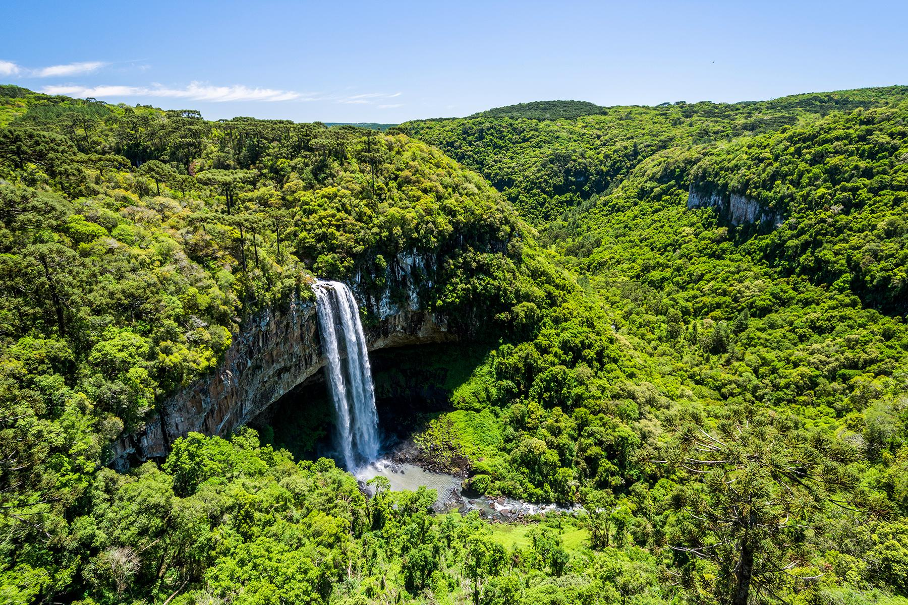

Brazil has the greatest variety of animals of any country in the world. It is home to 600 mammal species, 1,500 fish species, 1,600 bird species, and an amazing 100,000 different types of insects. Brazil's jungles are home to most of its animal life, but many unique species also live in the pampas and semidesert regions. In the central-western part of Brazil sits a flat, swampy area called the Pantanal. This patchwork of flooded lagoons and small islands is the world's largest wetland. Here live giant anacondas, huge guinea pig relatives called capybaras, and fierce South American alligators called caimans. For thousands of years, people have been exploiting the jungles of Brazil. But since Europeans arrived about five centuries ago, forest destruction has been rampant. Most of Brazil's Atlantic rain forest is now gone, and huge tracts of the Amazon are disappearing every year. The government has established many national parks and refuges, but they only cover about 7 percent of the country.
In total, eighty countries around the world have tropical rainforests. The Amazon rainforest comprises more than half of the world's remaining tropical rainforest. Continental Amazonia is the last large, continuous area of tropical rainforest on earth.

The greatest range of biodiversity on the entire planet earth is found in the Amazon. There is no other place on earth with a greater diversity. About 25% of the world's flora and fauna species live here.

There is no other place on earth where you will find such a variety of plant species like in the Amazon. The diversity is so great that some of the numbers can only be estimated. Some experts believe that one square kilometre of Amazonia has over a thousand trees and about 90,790 tons of living plants. It is almost unimaginable. So far, about 438,000 plants of economic and social interest have been discovered in the region.

Around 17 million people live in the Amazon. Of them, 62% of them live in urban centres like Manaus, and the rest in remote areas. The Amazon was settled way back in time and there has been a discovery of ceramic finds in this region. Archaeologists today are still digging and keep making exciting discoveries. The oldest are estimated to be up to 12,000 years old.
The Amazon is the most water-rich river in the world. That is a fact. Some also say that it is the longest river in the world. There is no consensus here. Is the Nile or the Amazon longer? In 2007 and 2008 both rivers were surveyed with a new technique and the Amazon was the winner.